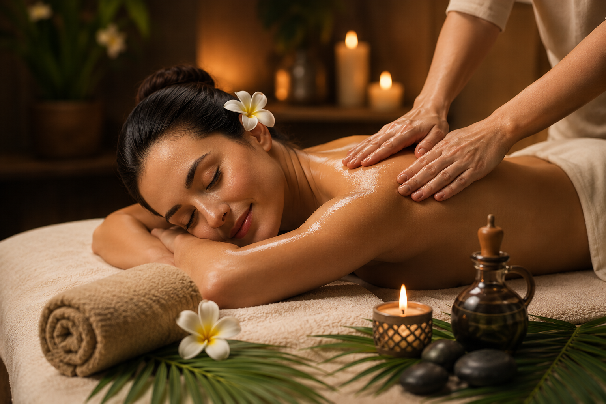
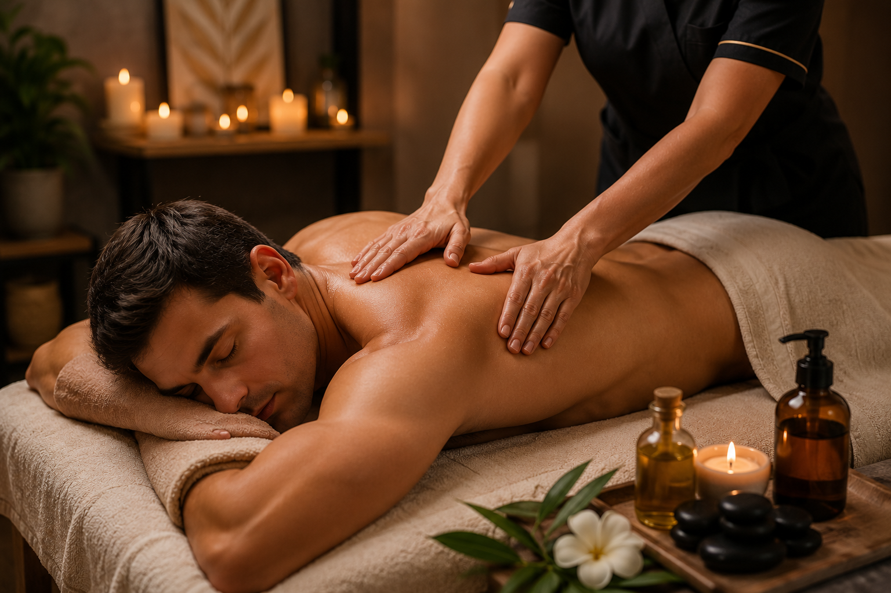
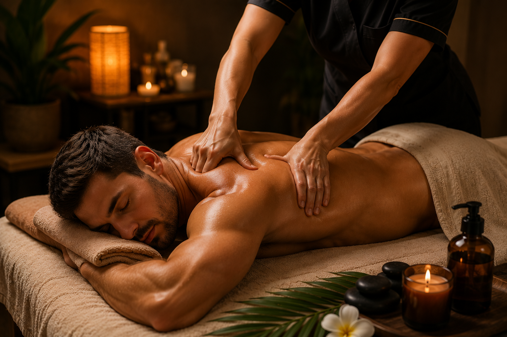
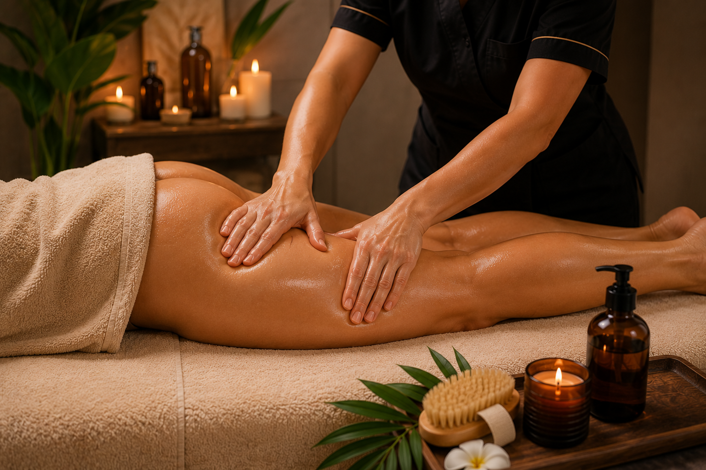
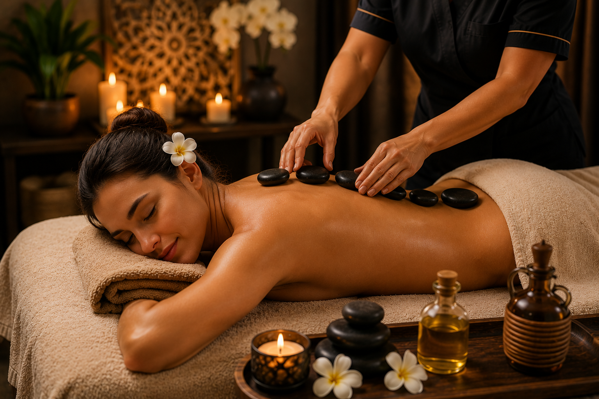
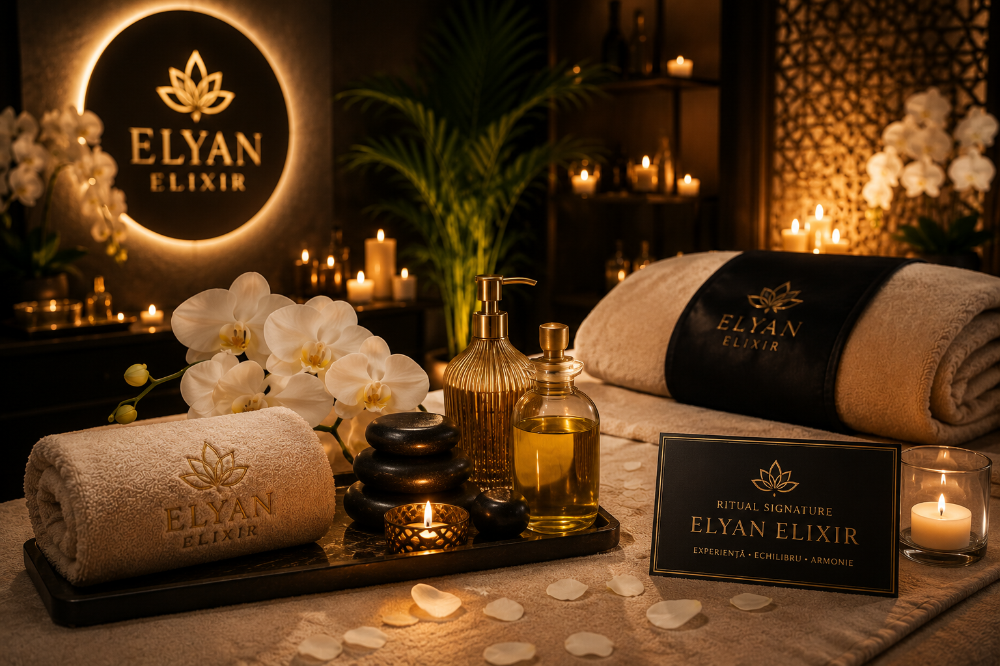

Relaxare și recuperare pentru corpul tău
Descoperă beneficiile masajului terapeutic și de relaxare într-o atmosferă elegantă și liniștitoare.

Relaxare PremiumMasaj de Relaxare
O experiență creată pentru a reda corpului și minții echilibrul de care au nevoie. Mișcările lente, presiunea personalizată și atmosfera liniștitoare transformă fiecare ședință într-un moment dedicat exclusiv relaxării tale.
Cui i se adresează
- Persoanelor care se confruntă cu stresul cotidian.
- Celor care petrec multe ore la birou.
- Persoanelor care își doresc relaxare fizică și mentală.
- Oricui dorește un moment de răsfăț și liniște.
Cum se desfășoară ședința
- Discuție inițială pentru identificarea preferințelor și a zonelor tensionate.
- Aplicarea uleiurilor profesionale încălzite.
- Mișcări lente și continue pentru relaxarea musculaturii.
- Presiunea este adaptată permanent confortului fiecărui client.
- Atmosferă relaxantă cu muzică ambientală și lumină difuză.
Ce urmărește această experiență
- Reducerea senzației de tensiune musculară.
- Inducerea unei stări profunde de relaxare.
- Crearea unui moment dedicat echilibrului dintre corp și minte.
- Îmbunătățirea stării generale de confort.

Recuperare & EchilibruMasaj Terapeutic
O ședință personalizată, adaptată zonelor cu tensiune musculară și disconfort. Prin tehnici specifice și o abordare atentă, masajul terapeutic urmărește relaxarea musculaturii și îmbunătățirea confortului fizic, fiind potrivit atât persoanelor active, cât și celor care petrec multe ore într-o poziție statică.
Cui i se adresează
- Persoanelor care prezintă tensiune musculară acumulată.
- Celor care lucrează multe ore la birou sau conduc frecvent.
- Persoanelor active sau celor care desfășoară activități fizice solicitante.
- Celor care își doresc o ședință adaptată zonelor tensionate.
Cum se desfășoară ședința
- Discuție inițială pentru identificarea zonelor care necesită atenție.
- Aplicarea tehnicilor terapeutice adaptate fiecărui client.
- Frământări, presiuni controlate și mobilizări ușoare.
- Intensitatea este ajustată permanent în funcție de confort.
- Finalizarea ședinței prin tehnici de relaxare pentru echilibrarea musculaturii.
Ce urmărește această experiență
- Reducerea senzației de tensiune musculară.
- Creșterea confortului și mobilității zonelor lucrate.
- Relaxarea musculaturii suprasolicitate.
- Susținerea unei stări generale de bine și recuperare după efort.

Deep Tissue ExpertMasaj Deep Tissue
O experiență dedicată persoanelor care își doresc un masaj cu presiune mai intensă, orientat către musculatura profundă. Prin tehnici controlate și adaptate fiecărui client, ședința urmărește diminuarea senzației de rigiditate musculară și creșterea confortului în zonele suprasolicitate.
Cui i se adresează
- Persoanelor active și sportivilor.
- Celor care desfășoară activități fizice intense.
- Persoanelor care resimt rigiditate musculară.
- Celor care preferă o presiune mai fermă în timpul masajului.
Cum se desfășoară ședința
- Discuție inițială pentru identificarea zonelor tensionate.
- Încălzirea musculaturii prin tehnici progresive.
- Aplicarea unor presiuni controlate asupra straturilor musculare profunde.
- Adaptarea permanentă a intensității în funcție de confortul clientului.
- Încheierea ședinței cu tehnici de relaxare pentru echilibrarea musculaturii.
Ce urmărește această experiență
- Reducerea senzației de rigiditate musculară.
- Relaxarea musculaturii profunde.
- Îmbunătățirea confortului în timpul mișcării.
- Susținerea recuperării după perioade de suprasolicitare fizică.

Remodelare CorporalăMasaj Anticelulitic
O experiență dedicată îngrijirii corporale, realizată prin tehnici specifice de masaj care urmăresc stimularea circulației locale și îmbunătățirea aspectului pielii. Fiecare ședință este adaptată nevoilor fiecărei persoane și poate face parte dintr-un program complet de remodelare corporală și întreținere.
Cui i se adresează
- Persoanelor care își doresc o îngrijire corporală completă.
- Celor care urmăresc îmbunătățirea aspectului pielii.
- Persoanelor care doresc includerea masajului într-un stil de viață sănătos.
- Celor care apreciază terapiile corporale profesionale.
Cum se desfășoară ședința
- Evaluarea zonelor asupra cărora se va lucra.
- Aplicarea produselor profesionale pentru masaj.
- Tehnici energice și mișcări ritmice adaptate fiecărei zone.
- Intensitatea este ajustată în funcție de confortul clientului.
- Recomandări pentru hidratare și îngrijire după ședință.
Ce urmărește această experiență
- Stimularea circulației locale.
- Îmbunătățirea aspectului și elasticității pielii.
- O senzație de tonifiere și revitalizare.
- Completarea unui program de remodelare corporală și îngrijire.

Terapie Termică PremiumMasaj cu Pietre Vulcanice
O experiență premium care îmbină tehnicile clasice de masaj cu efectul plăcut al pietrelor vulcanice încălzite. Căldura delicată contribuie la relaxarea musculaturii, oferind o stare profundă de confort și liniște într-un ambient elegant și rafinat.
Cui i se adresează
- Persoanelor care își doresc o experiență completă de relaxare.
- Celor care preferă terapiile bazate pe căldură.
- Persoanelor care resimt tensiune musculară după perioade solicitante.
- Celor care caută un moment autentic de răsfăț și echilibru.
Cum se desfășoară ședința
- Pregătirea corpului prin tehnici ușoare de relaxare.
- Utilizarea pietrelor vulcanice încălzite la temperatură controlată.
- Masaj combinat cu mișcări lente și armonioase.
- Aplicarea pietrelor pe zonele selectate pentru confort și relaxare.
- Finalizarea ședinței prin tehnici delicate de echilibrare.
Ce urmărește această experiență
- Relaxarea profundă a întregului corp.
- Reducerea senzației de tensiune musculară.
- Crearea unei stări de calm și echilibru.
- O experiență senzorială premium, dedicată stării de bine.

Signature ExperienceRitual Signature Elyan Elixir
Mai mult decât un simplu masaj, Ritual Signature Elyan Elixir este experiența emblematică a salonului nostru. Fiecare ședință este personalizată pentru tine, combinând tehnici de relaxare, aromaterapie și momente dedicate echilibrului dintre corp și minte. Totul se desfășoară într-un ambient elegant, unde fiecare detaliu este gândit pentru a transforma timpul petrecut la noi într-o experiență memorabilă.
Cui i se adresează
- Persoanelor care își doresc cea mai exclusivistă experiență Elyan Elixir.
- Celor care vor un moment complet de relaxare și răsfăț.
- Persoanelor care apreciază serviciile premium și atenția la detalii.
- Oricui dorește să ofere sau să primească un cadou cu adevărat special.
Ce include experiența
- Consultare și personalizarea ședinței în funcție de preferințele tale.
- Aromaterapie cu uleiuri profesionale atent selecționate.
- Masaj complet realizat prin tehnici adaptate fiecărui client.
- Prosop cald și atmosferă relaxantă cu muzică ambientală.
- Momente dedicate relaxării complete într-un spațiu elegant și intim.
Ce face această experiență specială
- Ședință complet personalizată.
- Ambient premium creat pentru relaxare profundă.
- Produse profesionale atent selecționate.
- Experiență exclusivă disponibilă doar în cadrul Elyan Elixir.
Pregătește-ți corpul înainte de masaj
Încălzirea musculară și exercițiile ușoare contribuie la o experiență completă de recuperare.
Îngrijire profesională pentru sănătatea picioarelor
Tratamente specializate realizate într-un mediu sigur și modern.
Eleganță până la ultimul detaliu
Manichiură și design modern realizate cu produse profesionale.
Un loc creat pentru relaxare și frumusețe
Elyan Elixir 88 este un concept dedicat echilibrului dintre sănătate, relaxare și frumusețe. Fiecare serviciu este gândit pentru a oferi o experiență premium într-un spațiu elegant și primitor.
Descoperă salonul nostru
În curând vei putea vedea imagini din interiorul salonului și atmosfera pe care am creat-o pentru tine.